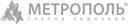

О проекте
Многофункциональный офисно-гостиничный комплекс «Бурятский Деловой центр» построен в центральной части города на
участке с общей площадью около 5 000 м2.
Здание имеет оригинальный силуэт со стороны улицы Борсоева: подвальная часть и три первых этажа значительно шире
основного здания по контуру. Четыре верхних этажа устроены ступенями, поднимающимися к куполу, где расположена смотровая
площадка.
Функциональное зонирование комплекса
| 1 этаж — операционные залы банка, торговые помещения магазинов, фитнес-центр |
| 2 этаж — административно-бытовые помещения банка, ресторан, офисы |
| 3, 4, 5, 6, 7 этажи — офисы |
| 8, 9, 10 этажи — гостиница |
| 11 этаж — бар |
| 12 этаж — технический этаж |
| Подземная парковка — 2 уровня, 76 машино-мест |
| Открытая наземная парковка — 54 машино-места |
На прилегающей территории
организованы открытые парковки для
банка, ресторана, гостиницы, магазина
и офисных помещений со стороны
улицы Борсоева.
Запланированы пандусы для
маломобильных групп населения.
Основные характеристики комплекса
| Площадь участка | 4 960 м2 |
| Площадь застройки | 2 880 м2 |
| Этажность МФК | 3, 7, 10 и 12 этажи |
| Общая площадь | 17 345,4 м2 |
| Арендуемая площадь | 15 672,88 м2 |
| Общая площадь гостиницы | 2 385 м2 |
| Количество номеров в гостинице | 43 |
| Общая площадь офисных помещений | 9 647,25 м2 |
Площадь филиала Банка
679,65 м2 | 17 345,4 м2 |
| Площадь ресторана | 667,00 м2 |
| Площадь бара | 100 м2 |
| Площадь фитнес-центра | 442,60 м2 |
| Подземный паркинг | 76 м/м
3 777,60 м2 |
Участники проекта
Многофункциональный офисно-гостиничный комплекс «Бурятский Деловой Центр» построен в центральной части города на
участке с общей площадью около 5 000 м2.
Здание имеет оригинальный силуэт со стороны улицы Борсоева: подвальная часть и три первых этажа значительно шире
основного здания по контуру. Четыре верхних этажа также устроены ступенями, поднимающимися к куполу, где организована
смотровая площадка.
ПланировкиО городеРасположениеИнфраструктураТехнические характеристики
Республика Бурятия, Улан-удэ
Советский район, ул. Борсоева, 19/БКарта проезда

проект группы компаний «Метрополь»